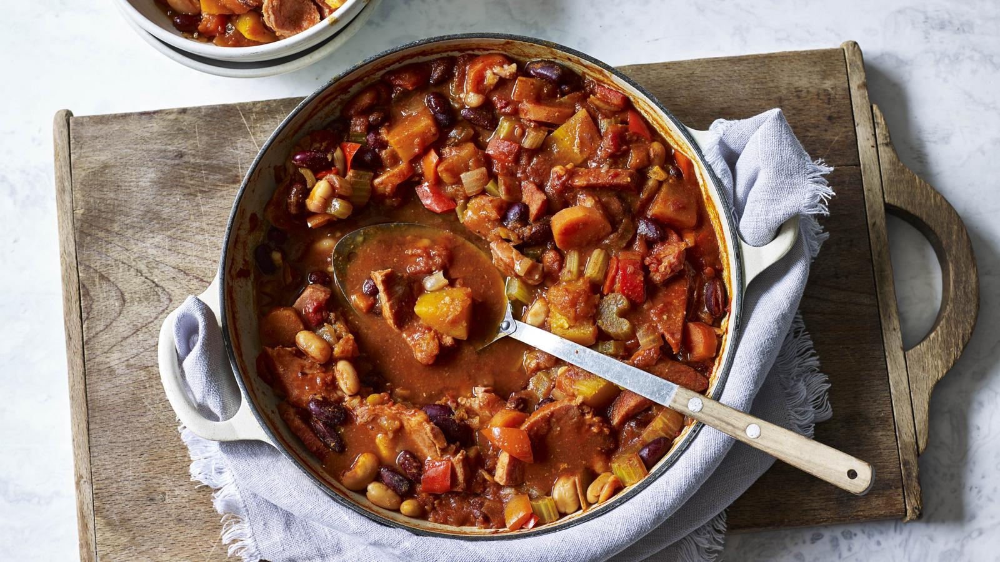

Campfire stew

Description
A nourishing and warming low-calorie casserole with a little kick. Serve with your choice of steamed vegetables.
Ingredients
low-calorie cooking spray
2 onions, roughly chopped
2 red peppers, deseeded and roughly chopped
4 garlic cloves, finely chopped
4 celery sticks, thickly sliced
2 carrots, peeled and thickly sliced
300g/10½oz peeled butternut squash, cut into 2cm/1¾in cubes
500ml/18fl oz chicken stock
400g tin chopped tomatoes
4 tbsp tomato purée
400g tin cannellini beans, drained and rinsed
400g tin red kidney beans in chilli sauce
1½ tbsp Cajun seasoning
1 tbsp sweet smoked paprika
1 tbsp Worcestershire sauce
1 tsp Tabasco sauce
600g/1lb 5oz lean, thick gammon steaks, cut into large pieces (any visible fat trimmed)
salt and freshlly ground back pepper
Steps
1. Preheat oven to 200C/180C Fan/Gas 6.
2. Spray a wide, ovenproof casserole dish with the low-calorie cooking spray.
3. Add the onion and peppers and stir-fry for 4–5 minutes over a medium–high heat to soften.
4. Add the remaining ingredients and bring to the boil. Cover and bake for 1½ hours, or until the gammon is tender and the sauce has thickened.
5. Season and serve with steamed vegetables.